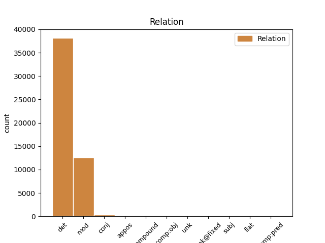
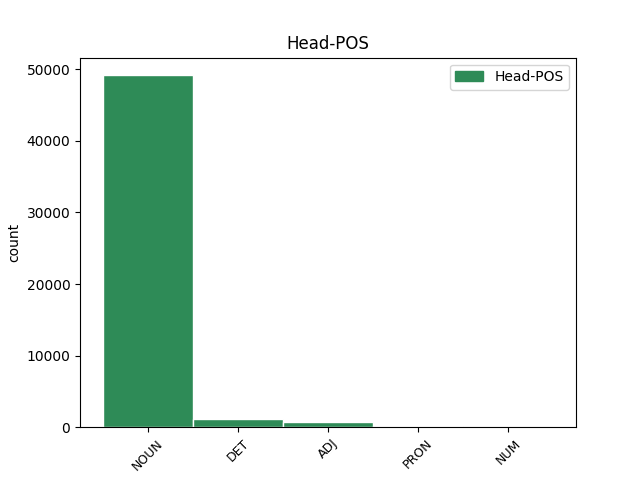
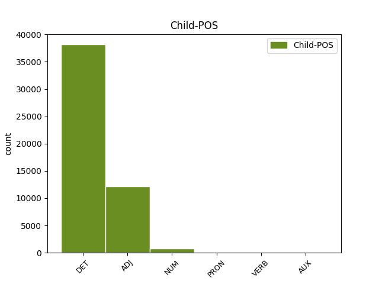

Distribution of features within this leaf



Agreement Rules sorted by frequency.
When the head token is NOUN and the dependent token is DET.
1 El el DET DET Definite=Def|Gender=Masc|Number=Sing|PronType=Art 2 det _ _
2 sanedrí sanedrí NOUN NOUN Gender=Masc|Number=Sing 0 _ _ _
3 estaria _ _ _ _ 0 _ _ _
4 format _ _ _ _ 0 _ _ _
5 per _ _ _ _ 0 _ _ _
6 Adolfo _ _ _ _ 0 _ _ _
7 Suárez _ _ _ _ 0 _ _ _
8 , _ _ _ _ 0 _ _ _
9 Leopoldo _ _ _ _ 0 _ _ _
10 Calvo-Sotelo _ _ _ _ 0 _ _ _
11 i _ _ _ _ 0 _ _ _
12 Felipe _ _ _ _ 0 _ _ _
13 González _ _ _ _ 0 _ _ _
14 . _ _ _ _ 0 _ _ _
When the head token is NOUN and the dependent token is ADJ.
1 El _ _ _ _ 0 _ _ _
2 líder _ _ _ _ 0 _ _ _
3 del _ _ _ _ 0 _ _ _
4 PSOE _ _ _ _ 0 _ _ _
5 , _ _ _ _ 0 _ _ _
6 va _ _ _ _ 0 _ _ _
7 anunciar _ _ _ _ 0 _ _ _
8 ahir _ _ _ _ 0 _ _ _
9 la _ _ _ _ 0 _ _ _
10 seva _ _ _ _ 0 _ _ _
11 intenció _ _ _ _ 0 _ _ _
12 de _ _ _ _ 0 _ _ _
13 proposar _ _ _ _ 0 _ _ _
14 la _ _ _ _ 0 _ _ _
15 creació _ _ _ _ 0 _ _ _
16 d' _ _ _ _ 0 _ _ _
17 un _ _ _ _ 0 _ _ _
18 consell consell NOUN NOUN Gender=Masc|Number=Sing 0 _ _ _
19 assessor _ _ _ _ 0 _ _ _
20 del _ _ _ _ 0 _ _ _
21 Govern _ _ _ _ 0 _ _ _
22 en _ _ _ _ 0 _ _ _
23 assumptes _ _ _ _ 0 _ _ _
24 internacionals _ _ _ _ 0 _ _ _
25 , _ _ _ _ 0 _ _ _
26 integrat integrat ADJ ADJ Gender=Masc|Number=Sing|VerbForm=Part 18 mod _ _
27 pels _ _ _ _ 0 _ _ _
28 expresidents _ _ _ _ 0 _ _ _
29 del _ _ _ _ 0 _ _ _
30 Govern _ _ _ _ 0 _ _ _
31 . _ _ _ _ 0 _ _ _
When the head token is DET and the dependent token is DET.
1 Després _ _ _ _ 0 _ _ _
2 d' _ _ _ _ 0 _ _ _
3 exposar _ _ _ _ 0 _ _ _
4 els _ _ _ _ 0 _ _ _
5 seus _ _ _ _ 0 _ _ _
6 arguments _ _ _ _ 0 _ _ _
7 , _ _ _ _ 0 _ _ _
8 Garzón _ _ _ _ 0 _ _ _
9 acaba _ _ _ _ 0 _ _ _
10 de _ _ _ _ 0 _ _ _
11 la _ _ _ _ 0 _ _ _
12 manera _ _ _ _ 0 _ _ _
13 següent _ _ _ _ 0 _ _ _
14 : _ _ _ _ 0 _ _ _
15 " _ _ _ _ 0 _ _ _
16 Totes tot DET DET Gender=Fem|Number=Plur|PronType=Ind 17 det _ _
17 aquestes aquest DET DET Gender=Fem|Number=Plur|PronType=Dem 0 _ _ _
18 accions _ _ _ _ 0 _ _ _
19 han _ _ _ _ 0 _ _ _
20 estat _ _ _ _ 0 _ _ _
21 sistemàticament _ _ _ _ 0 _ _ _
22 dirigides _ _ _ _ 0 _ _ _
23 contra _ _ _ _ 0 _ _ _
24 sectors _ _ _ _ 0 _ _ _
25 de _ _ _ _ 0 _ _ _
26 població _ _ _ _ 0 _ _ _
27 definits _ _ _ _ 0 _ _ _
28 i _ _ _ _ 0 _ _ _
29 , _ _ _ _ 0 _ _ _
30 a _ _ _ _ 0 _ _ _
31 vegades _ _ _ _ 0 _ _ _
32 , _ _ _ _ 0 _ _ _
33 de _ _ _ _ 0 _ _ _
34 forma _ _ _ _ 0 _ _ _
35 indiscriminada _ _ _ _ 0 _ _ _
36 , _ _ _ _ 0 _ _ _
37 i _ _ _ _ 0 _ _ _
38 per _ _ _ _ 0 _ _ _
39 això _ _ _ _ 0 _ _ _
40 no _ _ _ _ 0 _ _ _
41 s' _ _ _ _ 0 _ _ _
42 ha _ _ _ _ 0 _ _ _
43 de _ _ _ _ 0 _ _ _
44 dubtar _ _ _ _ 0 _ _ _
45 de _ _ _ _ 0 _ _ _
46 qualificar _ _ _ _ 0 _ _ _
47 les _ _ _ _ 0 _ _ _
48 accions _ _ _ _ 0 _ _ _
49 de _ _ _ _ 0 _ _ _
50 l' _ _ _ _ 0 _ _ _
51 organització _ _ _ _ 0 _ _ _
52 terrorista _ _ _ _ 0 _ _ _
53 ETA _ _ _ _ 0 _ _ _
54 , _ _ _ _ 0 _ _ _
55 en _ _ _ _ 0 _ _ _
56 la _ _ _ _ 0 _ _ _
57 qual _ _ _ _ 0 _ _ _
58 s' _ _ _ _ 0 _ _ _
59 enquadra _ _ _ _ 0 _ _ _
60 HB-EH-Batasuna _ _ _ _ 0 _ _ _
61 , _ _ _ _ 0 _ _ _
62 de _ _ _ _ 0 _ _ _
63 crims _ _ _ _ 0 _ _ _
64 contra _ _ _ _ 0 _ _ _
65 la _ _ _ _ 0 _ _ _
66 humanitat _ _ _ _ 0 _ _ _
67 " _ _ _ _ 0 _ _ _
68 . _ _ _ _ 0 _ _ _
When the head token is NOUN and the dependent token is NUM.
1 Dos dos NUM NUM Gender=Masc|Number=Plur|NumType=Card 2 mod _ _
2 anys any NOUN NOUN Gender=Masc|Number=Plur 0 _ _ _
3 més _ _ _ _ 0 _ _ _
4 tard _ _ _ _ 0 _ _ _
5 neix _ _ _ _ 0 _ _ _
6 la _ _ _ _ 0 _ _ _
7 Koordinadora _ _ _ _ 0 _ _ _
8 Abertzale _ _ _ _ 0 _ _ _
9 Sozialista _ _ _ _ 0 _ _ _
10 ( _ _ _ _ 0 _ _ _
11 KAS _ _ _ _ 0 _ _ _
12 ) _ _ _ _ 0 _ _ _
13 , _ _ _ _ 0 _ _ _
14 encarregada _ _ _ _ 0 _ _ _
15 de _ _ _ _ 0 _ _ _
16 coordinar _ _ _ _ 0 _ _ _
17 sota _ _ _ _ 0 _ _ _
18 la _ _ _ _ 0 _ _ _
19 direcció _ _ _ _ 0 _ _ _
20 d' _ _ _ _ 0 _ _ _
21 ETA _ _ _ _ 0 _ _ _
22 " _ _ _ _ 0 _ _ _
23 els _ _ _ _ 0 _ _ _
24 fronts _ _ _ _ 0 _ _ _
25 cultural _ _ _ _ 0 _ _ _
26 , _ _ _ _ 0 _ _ _
27 de _ _ _ _ 0 _ _ _
28 masses _ _ _ _ 0 _ _ _
29 i _ _ _ _ 0 _ _ _
30 polític _ _ _ _ 0 _ _ _
31 i _ _ _ _ 0 _ _ _
32 institucional _ _ _ _ 0 _ _ _
33 " _ _ _ _ 0 _ _ _
34 , _ _ _ _ 0 _ _ _
35 mentre _ _ _ _ 0 _ _ _
36 que _ _ _ _ 0 _ _ _
37 el _ _ _ _ 0 _ _ _
38 front _ _ _ _ 0 _ _ _
39 militar _ _ _ _ 0 _ _ _
40 queda _ _ _ _ 0 _ _ _
41 " _ _ _ _ 0 _ _ _
42 directament _ _ _ _ 0 _ _ _
43 dependent _ _ _ _ 0 _ _ _
44 d' _ _ _ _ 0 _ _ _
45 ETA _ _ _ _ 0 _ _ _
46 " _ _ _ _ 0 _ _ _
47 , _ _ _ _ 0 _ _ _
48 segons _ _ _ _ 0 _ _ _
49 explica _ _ _ _ 0 _ _ _
50 Garzón _ _ _ _ 0 _ _ _
51 en _ _ _ _ 0 _ _ _
52 l' _ _ _ _ 0 _ _ _
53 acte _ _ _ _ 0 _ _ _
54 . _ _ _ _ 0 _ _ _
When the head token is ADJ and the dependent token is ADJ.
1 ( _ _ _ _ 0 _ _ _
2 ... _ _ _ _ 0 _ _ _
3 ) _ _ _ _ 0 _ _ _
4 I _ _ _ _ 0 _ _ _
5 gestionar _ _ _ _ 0 _ _ _
6 fons _ _ _ _ 0 _ _ _
7 econòmics _ _ _ _ 0 _ _ _
8 , _ _ _ _ 0 _ _ _
9 que _ _ _ _ 0 _ _ _
10 procedents _ _ _ _ 0 _ _ _
11 de _ _ _ _ 0 _ _ _
12 municipis _ _ _ _ 0 _ _ _
13 bascos _ _ _ _ 0 _ _ _
14 i _ _ _ _ 0 _ _ _
15 altres _ _ _ _ 0 _ _ _
16 institucions _ _ _ _ 0 _ _ _
17 públiques públic ADJ ADJ Gender=Fem|Number=Plur 0 _ _ _
18 i _ _ _ _ 0 _ _ _
19 privades privat ADJ ADJ Gender=Fem|Number=Plur 17 conj _ _
20 ( _ _ _ _ 0 _ _ _
21 ... _ _ _ _ 0 _ _ _
22 ) _ _ _ _ 0 _ _ _
23 possibilitin _ _ _ _ 0 _ _ _
24 una _ _ _ _ 0 _ _ _
25 cooperació _ _ _ _ 0 _ _ _
26 descentralitzada _ _ _ _ 0 _ _ _
27 i _ _ _ _ 0 _ _ _
28 promoguin _ _ _ _ 0 _ _ _
29 un _ _ _ _ 0 _ _ _
30 desenvolupament _ _ _ _ 0 _ _ _
31 sostenible _ _ _ _ 0 _ _ _
32 dels _ _ _ _ 0 _ _ _
33 països _ _ _ _ 0 _ _ _
34 del _ _ _ _ 0 _ _ _
35 Tercer _ _ _ _ 0 _ _ _
36 Món _ _ _ _ 0 _ _ _
37 " _ _ _ _ 0 _ _ _
38 . _ _ _ _ 0 _ _ _
When the head token is ADJ and the dependent token is DET.
1 Segons _ _ _ _ 0 _ _ _
2 Garzón _ _ _ _ 0 _ _ _
3 , _ _ _ _ 0 _ _ _
4 les el DET DET Definite=Def|Gender=Fem|Number=Plur|PronType=Art 5 det _ _
5 primeres primer ADJ ADJ Gender=Fem|Number=Plur|NumType=Ord 0 _ _ _
6 les _ _ _ _ 0 _ _ _
7 formen _ _ _ _ 0 _ _ _
8 " _ _ _ _ 0 _ _ _
9 simpatitzants _ _ _ _ 0 _ _ _
10 o _ _ _ _ 0 _ _ _
11 militants _ _ _ _ 0 _ _ _
12 de _ _ _ _ 0 _ _ _
13 diferents _ _ _ _ 0 _ _ _
14 organitzacions _ _ _ _ 0 _ _ _
15 de _ _ _ _ 0 _ _ _
16 l' _ _ _ _ 0 _ _ _
17 MLNV _ _ _ _ 0 _ _ _
18 " _ _ _ _ 0 _ _ _
19 que _ _ _ _ 0 _ _ _
20 accedeixen _ _ _ _ 0 _ _ _
21 a _ _ _ _ 0 _ _ _
22 informació _ _ _ _ 0 _ _ _
23 d' _ _ _ _ 0 _ _ _
24 interès _ _ _ _ 0 _ _ _
25 mitjançant _ _ _ _ 0 _ _ _
26 la _ _ _ _ 0 _ _ _
27 seva _ _ _ _ 0 _ _ _
28 activitat _ _ _ _ 0 _ _ _
29 laboral _ _ _ _ 0 _ _ _
30 , _ _ _ _ 0 _ _ _
31 la _ _ _ _ 0 _ _ _
32 localitat _ _ _ _ 0 _ _ _
33 en _ _ _ _ 0 _ _ _
34 què _ _ _ _ 0 _ _ _
35 resideixen _ _ _ _ 0 _ _ _
36 , _ _ _ _ 0 _ _ _
37 o _ _ _ _ 0 _ _ _
38 infiltrats _ _ _ _ 0 _ _ _
39 que _ _ _ _ 0 _ _ _
40 realitzen _ _ _ _ 0 _ _ _
41 tasques _ _ _ _ 0 _ _ _
42 de _ _ _ _ 0 _ _ _
43 filmació _ _ _ _ 0 _ _ _
44 , _ _ _ _ 0 _ _ _
45 gravació _ _ _ _ 0 _ _ _
46 o _ _ _ _ 0 _ _ _
47 vigilància _ _ _ _ 0 _ _ _
48 . _ _ _ _ 0 _ _ _
When the head token is DET and the dependent token is NUM.
1 Els el DET DET Definite=Def|Gender=Masc|Number=Plur|PronType=Art 0 _ _ _
2 dos dos NUM NUM Gender=Masc|Number=Plur|NumType=Card 1 mod _ _
3 ministres _ _ _ _ 0 _ _ _
4 van _ _ _ _ 0 _ _ _
5 participar _ _ _ _ 0 _ _ _
6 ahir _ _ _ _ 0 _ _ _
7 en _ _ _ _ 0 _ _ _
8 la _ _ _ _ 0 _ _ _
9 reunió _ _ _ _ 0 _ _ _
10 que _ _ _ _ 0 _ _ _
11 la _ _ _ _ 0 _ _ _
12 UE _ _ _ _ 0 _ _ _
13 va _ _ _ _ 0 _ _ _
14 celebrar _ _ _ _ 0 _ _ _
15 a _ _ _ _ 0 _ _ _
16 Elsinor _ _ _ _ 0 _ _ _
17 ( _ _ _ _ 0 _ _ _
18 Dinamarca _ _ _ _ 0 _ _ _
19 ) _ _ _ _ 0 _ _ _
20 . _ _ _ _ 0 _ _ _
When the head token is PRON and the dependent token is DET.
1 L' _ _ _ _ 0 _ _ _
2 equip _ _ _ _ 0 _ _ _
3 madrileny _ _ _ _ 0 _ _ _
4 arriba _ _ _ _ 0 _ _ _
5 al _ _ _ _ 0 _ _ _
6 Blaugrana _ _ _ _ 0 _ _ _
7 amb _ _ _ _ 0 _ _ _
8 un _ _ _ _ 0 _ _ _
9 balanç _ _ _ _ 0 _ _ _
10 de _ _ _ _ 0 _ _ _
11 tres _ _ _ _ 0 _ _ _
12 victòries _ _ _ _ 0 _ _ _
13 i _ _ _ _ 0 _ _ _
14 dues _ _ _ _ 0 _ _ _
15 derrotes _ _ _ _ 0 _ _ _
16 , _ _ _ _ 0 _ _ _
17 el el DET DET Definite=Def|Gender=Masc|Number=Sing|PronType=Art 18 det _ _
18 mateix mateix PRON PRON Gender=Masc|Number=Sing|PronType=Ind 0 _ _ _
19 que _ _ _ _ 0 _ _ _
20 el _ _ _ _ 0 _ _ _
21 Barça _ _ _ _ 0 _ _ _
22 . _ _ _ _ 0 _ _ _
When the head token is NOUN and the dependent token is PRON.
1 L' _ _ _ _ 0 _ _ _
2 equip _ _ _ _ 0 _ _ _
3 madrileny _ _ _ _ 0 _ _ _
4 arriba _ _ _ _ 0 _ _ _
5 al _ _ _ _ 0 _ _ _
6 Blaugrana _ _ _ _ 0 _ _ _
7 amb _ _ _ _ 0 _ _ _
8 un _ _ _ _ 0 _ _ _
9 balanç balanç NOUN NOUN Gender=Masc|Number=Sing 0 _ _ _
10 de _ _ _ _ 0 _ _ _
11 tres _ _ _ _ 0 _ _ _
12 victòries _ _ _ _ 0 _ _ _
13 i _ _ _ _ 0 _ _ _
14 dues _ _ _ _ 0 _ _ _
15 derrotes _ _ _ _ 0 _ _ _
16 , _ _ _ _ 0 _ _ _
17 el _ _ _ _ 0 _ _ _
18 mateix mateix PRON PRON Gender=Masc|Number=Sing|PronType=Ind 9 appos _ _
19 que _ _ _ _ 0 _ _ _
20 el _ _ _ _ 0 _ _ _
21 Barça _ _ _ _ 0 _ _ _
22 . _ _ _ _ 0 _ _ _
When the head token is DET and the dependent token is ADJ.
1 Per _ _ _ _ 0 _ _ _
2 països _ _ _ _ 0 _ _ _
3 , _ _ _ _ 0 _ _ _
4 el _ _ _ _ 0 _ _ _
5 resultat _ _ _ _ 0 _ _ _
6 corresponent _ _ _ _ 0 _ _ _
7 a _ _ _ _ 0 _ _ _
8 Espanya _ _ _ _ 0 _ _ _
9 els el DET DET Definite=Def|Gender=Masc|Number=Plur|PronType=Art 0 _ _ _
10 primers primer ADJ ADJ Gender=Masc|Number=Plur|NumType=Ord 9 mod _ _
11 tres _ _ _ _ 0 _ _ _
12 mesos _ _ _ _ 0 _ _ _
13 de _ _ _ _ 0 _ _ _
14 l' _ _ _ _ 0 _ _ _
15 any _ _ _ _ 0 _ _ _
16 va _ _ _ _ 0 _ _ _
17 ser _ _ _ _ 0 _ _ _
18 un _ _ _ _ 0 _ _ _
19 increment _ _ _ _ 0 _ _ _
20 del _ _ _ _ 0 _ _ _
21 3,4% _ _ _ _ 0 _ _ _
22 , _ _ _ _ 0 _ _ _
23 enfront _ _ _ _ 0 _ _ _
24 del _ _ _ _ 0 _ _ _
25 2,4% _ _ _ _ 0 _ _ _
26 del _ _ _ _ 0 _ _ _
27 trimestre _ _ _ _ 0 _ _ _
28 anterior _ _ _ _ 0 _ _ _
29 i _ _ _ _ 0 _ _ _
30 de _ _ _ _ 0 _ _ _
31 l' _ _ _ _ 0 _ _ _
32 1,8% _ _ _ _ 0 _ _ _
33 registrat _ _ _ _ 0 _ _ _
34 el _ _ _ _ 0 _ _ _
35 primer _ _ _ _ 0 _ _ _
36 trimestre _ _ _ _ 0 _ _ _
37 del _ _ _ _ 0 _ _ _
38 1999 _ _ _ _ 0 _ _ _
39 . _ _ _ _ 0 _ _ _
When the head token is NUM and the dependent token is PRON.
1 Garzón _ _ _ _ 0 _ _ _
2 pretén _ _ _ _ 0 _ _ _
3 demostrar _ _ _ _ 0 _ _ _
4 , _ _ _ _ 0 _ _ _
5 amb _ _ _ _ 0 _ _ _
6 el _ _ _ _ 0 _ _ _
7 suport _ _ _ _ 0 _ _ _
8 de _ _ _ _ 0 _ _ _
9 documents _ _ _ _ 0 _ _ _
10 interns _ _ _ _ 0 _ _ _
11 d' _ _ _ _ 0 _ _ _
12 ETA _ _ _ _ 0 _ _ _
13 , _ _ _ _ 0 _ _ _
14 que _ _ _ _ 0 _ _ _
15 la _ _ _ _ 0 _ _ _
16 formació _ _ _ _ 0 _ _ _
17 política _ _ _ _ 0 _ _ _
18 ha _ _ _ _ 0 _ _ _
19 estat _ _ _ _ 0 _ _ _
20 controlada _ _ _ _ 0 _ _ _
21 des _ _ _ _ 0 _ _ _
22 dels _ _ _ _ 0 _ _ _
23 seus _ _ _ _ 0 _ _ _
24 orígens _ _ _ _ 0 _ _ _
25 per _ _ _ _ 0 _ _ _
26 la _ _ _ _ 0 _ _ _
27 banda _ _ _ _ 0 _ _ _
28 terrorista _ _ _ _ 0 _ _ _
29 , _ _ _ _ 0 _ _ _
30 i _ _ _ _ 0 _ _ _
31 que _ _ _ _ 0 _ _ _
32 aquest _ _ _ _ 0 _ _ _
33 control _ _ _ _ 0 _ _ _
34 ha _ _ _ _ 0 _ _ _
35 augmentat _ _ _ _ 0 _ _ _
36 amb _ _ _ _ 0 _ _ _
37 els _ _ _ _ 0 _ _ _
38 anys _ _ _ _ 0 _ _ _
39 fins _ _ _ _ 0 _ _ _
40 al _ _ _ _ 0 _ _ _
41 punt _ _ _ _ 0 _ _ _
42 que _ _ _ _ 0 _ _ _
43 no _ _ _ _ 0 _ _ _
44 hi _ _ _ _ 0 _ _ _
45 ha _ _ _ _ 0 _ _ _
46 diferències _ _ _ _ 0 _ _ _
47 entre _ _ _ _ 0 _ _ _
48 totes tot PRON PRON Gender=Fem|Number=Plur|PronType=Ind 49 mod _ _
49 dues dos NUM NUM Gender=Fem|Number=Plur|NumType=Card 0 _ _ _
50 . _ _ _ _ 0 _ _ _
When the head token is PRON and the dependent token is ADJ.
1 Quan _ _ _ _ 0 _ _ _
2 divendres _ _ _ _ 0 _ _ _
3 passat _ _ _ _ 0 _ _ _
4 a _ _ _ _ 0 _ _ _
5 la _ _ _ _ 0 _ _ _
6 nit _ _ _ _ 0 _ _ _
7 , _ _ _ _ 0 _ _ _
8 l' _ _ _ _ 0 _ _ _
9 alcalde _ _ _ _ 0 _ _ _
10 Joan _ _ _ _ 0 _ _ _
11 Clos _ _ _ _ 0 _ _ _
12 i _ _ _ _ 0 _ _ _
13 el _ _ _ _ 0 _ _ _
14 primer _ _ _ _ 0 _ _ _
15 secretari _ _ _ _ 0 _ _ _
16 del _ _ _ _ 0 _ _ _
17 PSC _ _ _ _ 0 _ _ _
18 de _ _ _ _ 0 _ _ _
19 Barcelona _ _ _ _ 0 _ _ _
20 , _ _ _ _ 0 _ _ _
21 Antoni _ _ _ _ 0 _ _ _
22 Santiburcio _ _ _ _ 0 _ _ _
23 , _ _ _ _ 0 _ _ _
24 van _ _ _ _ 0 _ _ _
25 tancar _ _ _ _ 0 _ _ _
26 la _ _ _ _ 0 _ _ _
27 llista _ _ _ _ 0 _ _ _
28 electoral _ _ _ _ 0 _ _ _
29 , _ _ _ _ 0 _ _ _
30 aquest aquest PRON PRON Gender=Masc|Number=Sing|PronType=Dem 0 _ _ _
31 últim últim ADJ ADJ Gender=Masc|Number=Sing|NumType=Ord 30 mod _ _
32 va _ _ _ _ 0 _ _ _
33 confessar _ _ _ _ 0 _ _ _
34 als _ _ _ _ 0 _ _ _
35 seus _ _ _ _ 0 _ _ _
36 col·laboradors _ _ _ _ 0 _ _ _
37 que _ _ _ _ 0 _ _ _
38 havia _ _ _ _ 0 _ _ _
39 estat _ _ _ _ 0 _ _ _
40 una _ _ _ _ 0 _ _ _
41 de _ _ _ _ 0 _ _ _
42 les _ _ _ _ 0 _ _ _
43 negociacions _ _ _ _ 0 _ _ _
44 més _ _ _ _ 0 _ _ _
45 difícils _ _ _ _ 0 _ _ _
46 de _ _ _ _ 0 _ _ _
47 la _ _ _ _ 0 _ _ _
48 seva _ _ _ _ 0 _ _ _
49 carrera _ _ _ _ 0 _ _ _
50 política _ _ _ _ 0 _ _ _
51 . _ _ _ _ 0 _ _ _
When the head token is PRON and the dependent token is PRON.
1 Tot tot PRON PRON Gender=Masc|Number=Sing|PronType=Ind 0 _ _ _
2 pel _ _ _ _ 0 _ _ _
3 títol _ _ _ _ 0 _ _ _
4 , _ _ _ _ 0 _ _ _
5 tot tot PRON PRON Gender=Masc|Number=Sing|PronType=Ind 1 mod _ _
6 pels _ _ _ _ 0 _ _ _
7 punts _ _ _ _ 0 _ _ _
8 . _ _ _ _ 0 _ _ _
When the head token is NOUN and the dependent token is VERB.
1 L' _ _ _ _ 0 _ _ _
2 acord _ _ _ _ 0 _ _ _
3 preveu _ _ _ _ 0 _ _ _
4 crear _ _ _ _ 0 _ _ _
5 una _ _ _ _ 0 _ _ _
6 nova _ _ _ _ 0 _ _ _
7 empresa _ _ _ _ 0 _ _ _
8 a _ _ _ _ 0 _ _ _
9 Corea _ _ _ _ 0 _ _ _
10 del _ _ _ _ 0 _ _ _
11 Sud _ _ _ _ 0 _ _ _
12 i _ _ _ _ 0 _ _ _
13 la _ _ _ _ 0 _ _ _
14 compra _ _ _ _ 0 _ _ _
15 de _ _ _ _ 0 _ _ _
16 les _ _ _ _ 0 _ _ _
17 fàbriques _ _ _ _ 0 _ _ _
18 de _ _ _ _ 0 _ _ _
19 Changwon _ _ _ _ 0 _ _ _
20 i _ _ _ _ 0 _ _ _
21 Kunsan _ _ _ _ 0 _ _ _
22 , _ _ _ _ 0 _ _ _
23 en _ _ _ _ 0 _ _ _
24 aquell _ _ _ _ 0 _ _ _
25 país _ _ _ _ 0 _ _ _
26 , _ _ _ _ 0 _ _ _
27 així _ _ _ _ 0 _ _ _
28 com _ _ _ _ 0 _ _ _
29 la _ _ _ _ 0 _ _ _
30 del _ _ _ _ 0 _ _ _
31 Vietnam _ _ _ _ 0 _ _ _
32 i _ _ _ _ 0 _ _ _
33 nou _ _ _ _ 0 _ _ _
34 xarxes xarxa NOUN NOUN Gender=Fem|Number=Plur 0 _ _ _
35 de _ _ _ _ 0 _ _ _
36 venda _ _ _ _ 0 _ _ _
37 a _ _ _ _ 0 _ _ _
38 l' _ _ _ _ 0 _ _ _
39 estranger _ _ _ _ 0 _ _ _
40 , _ _ _ _ 0 _ _ _
41 inclosa incloure VERB VERB Gender=Fem|Number=Sing|Tense=Past|VerbForm=Part 34 mod _ _
42 la _ _ _ _ 0 _ _ _
43 d' _ _ _ _ 0 _ _ _
44 Espanya _ _ _ _ 0 _ _ _
45 . _ _ _ _ 0 _ _ _
When the head token is NUM and the dependent token is DET.
1 El _ _ _ _ 0 _ _ _
2 foc _ _ _ _ 0 _ _ _
3 es _ _ _ _ 0 _ _ _
4 va _ _ _ _ 0 _ _ _
5 declarar _ _ _ _ 0 _ _ _
6 poc _ _ _ _ 0 _ _ _
7 abans _ _ _ _ 0 _ _ _
8 de _ _ _ _ 0 _ _ _
9 les el DET DET Definite=Def|Gender=Fem|Number=Plur|PronType=Art 10 det _ _
10 dues dues NUM NUM Gender=Fem|NumType=Card 0 _ _ _
11 del _ _ _ _ 0 _ _ _
12 migdia _ _ _ _ 0 _ _ _
13 i _ _ _ _ 0 _ _ _
14 es _ _ _ _ 0 _ _ _
15 va _ _ _ _ 0 _ _ _
16 donar _ _ _ _ 0 _ _ _
17 per _ _ _ _ 0 _ _ _
18 controlat _ _ _ _ 0 _ _ _
19 quatre _ _ _ _ 0 _ _ _
20 hores _ _ _ _ 0 _ _ _
21 més _ _ _ _ 0 _ _ _
22 tard _ _ _ _ 0 _ _ _
23 . _ _ _ _ 0 _ _ _
When the head token is NUM and the dependent token is ADJ.
1 Fins _ _ _ _ 0 _ _ _
2 aquí _ _ _ _ 0 _ _ _
3 , _ _ _ _ 0 _ _ _
4 tot _ _ _ _ 0 _ _ _
5 sembla _ _ _ _ 0 _ _ _
6 normal _ _ _ _ 0 _ _ _
7 , _ _ _ _ 0 _ _ _
8 ja _ _ _ _ 0 _ _ _
9 que _ _ _ _ 0 _ _ _
10 és _ _ _ _ 0 _ _ _
11 lògic _ _ _ _ 0 _ _ _
12 que _ _ _ _ 0 _ _ _
13 una _ _ _ _ 0 _ _ _
14 gran _ _ _ _ 0 _ _ _
15 borrasca _ _ _ _ 0 _ _ _
16 deixi _ _ _ _ 0 _ _ _
17 dos dos NUM NUM Gender=Masc|Number=Sing|NumType=Card 0 _ _ _
18 , _ _ _ _ 0 _ _ _
19 tres _ _ _ _ 0 _ _ _
20 i _ _ _ _ 0 _ _ _
21 fins _ _ _ _ 0 _ _ _
22 a _ _ _ _ 0 _ _ _
23 quatre _ _ _ _ 0 _ _ _
24 dies _ _ _ _ 0 _ _ _
25 seguits seguit ADJ ADJ Gender=Masc|Number=Plur|VerbForm=Part 17 mod _ _
26 de _ _ _ _ 0 _ _ _
27 xàfecs _ _ _ _ 0 _ _ _
28 . _ _ _ _ 0 _ _ _
When the head token is NOUN and the dependent token is AUX.
1 La _ _ _ _ 0 _ _ _
2 part _ _ _ _ 0 _ _ _
3 final _ _ _ _ 0 _ _ _
4 de _ _ _ _ 0 _ _ _
5 l' _ _ _ _ 0 _ _ _
6 exposició _ _ _ _ 0 _ _ _
7 vol _ _ _ _ 0 _ _ _
8 recollir _ _ _ _ 0 _ _ _
9 la _ _ _ _ 0 _ _ _
10 memòria _ _ _ _ 0 _ _ _
11 del _ _ _ _ 0 _ _ _
12 poeta _ _ _ _ 0 _ _ _
13 a _ _ _ _ 0 _ _ _
14 través _ _ _ _ 0 _ _ _
15 d' _ _ _ _ 0 _ _ _
16 entrevistes _ _ _ _ 0 _ _ _
17 en _ _ _ _ 0 _ _ _
18 què _ _ _ _ 0 _ _ _
19 diversos _ _ _ _ 0 _ _ _
20 personatges personatge NOUN NOUN Gender=Masc|Number=Plur 0 _ _ _
21 que _ _ _ _ 0 _ _ _
22 hi _ _ _ _ 0 _ _ _
23 van _ _ _ _ 0 _ _ _
24 estar _ _ _ _ 0 _ _ _
25 vinculats vincular AUX AUX Gender=Masc|Number=Plur|Tense=Past|VerbForm=Part 20 mod _ _
26 exposen _ _ _ _ 0 _ _ _
27 els _ _ _ _ 0 _ _ _
28 seus _ _ _ _ 0 _ _ _
29 records _ _ _ _ 0 _ _ _
30 i _ _ _ _ 0 _ _ _
31 impressions _ _ _ _ 0 _ _ _
32 . _ _ _ _ 0 _ _ _
When the head token is ADJ and the dependent token is NUM.
1 Els _ _ _ _ 0 _ _ _
2 mesos _ _ _ _ 0 _ _ _
3 de _ _ _ _ 0 _ _ _
4 febrer _ _ _ _ 0 _ _ _
5 , _ _ _ _ 0 _ _ _
6 març _ _ _ _ 0 _ _ _
7 i _ _ _ _ 0 _ _ _
8 abril _ _ _ _ 0 _ _ _
9 de _ _ _ _ 0 _ _ _
10 l' _ _ _ _ 0 _ _ _
11 any _ _ _ _ 0 _ _ _
12 1999 _ _ _ _ 0 _ _ _
13 , _ _ _ _ 0 _ _ _
14 l' _ _ _ _ 0 _ _ _
15 equip _ _ _ _ 0 _ _ _
16 d' _ _ _ _ 0 _ _ _
17 inspectors _ _ _ _ 0 _ _ _
18 que _ _ _ _ 0 _ _ _
19 dirigia _ _ _ _ 0 _ _ _
20 David _ _ _ _ 0 _ _ _
21 Vives _ _ _ _ 0 _ _ _
22 intentava _ _ _ _ 0 _ _ _
23 descobrir _ _ _ _ 0 _ _ _
24 la _ _ _ _ 0 _ _ _
25 situació _ _ _ _ 0 _ _ _
26 real _ _ _ _ 0 _ _ _
27 de _ _ _ _ 0 _ _ _
28 Gescartera _ _ _ _ 0 _ _ _
29 , _ _ _ _ 0 _ _ _
30 matèria _ _ _ _ 0 _ _ _
31 en _ _ _ _ 0 _ _ _
32 què _ _ _ _ 0 _ _ _
33 eren _ _ _ _ 0 _ _ _
34 obstaculitzats _ _ _ _ 0 _ _ _
35 pels _ _ _ _ 0 _ _ _
36 dos dos NUM NUM Gender=Masc|Number=Plur|NumType=Card 38 mod _ _
37 màxims _ _ _ _ 0 _ _ _
38 executius executiu ADJ ADJ Gender=Masc|Number=Plur 0 _ _ _
39 de _ _ _ _ 0 _ _ _
40 l' _ _ _ _ 0 _ _ _
41 agència _ _ _ _ 0 _ _ _
42 de _ _ _ _ 0 _ _ _
43 valors _ _ _ _ 0 _ _ _
44 , _ _ _ _ 0 _ _ _
45 Camacho _ _ _ _ 0 _ _ _
46 i _ _ _ _ 0 _ _ _
47 l' _ _ _ _ 0 _ _ _
48 exfuncionari _ _ _ _ 0 _ _ _
49 de _ _ _ _ 0 _ _ _
50 la _ _ _ _ 0 _ _ _
51 comissió _ _ _ _ 0 _ _ _
52 José _ _ _ _ 0 _ _ _
53 María _ _ _ _ 0 _ _ _
54 Ruiz _ _ _ _ 0 _ _ _
55 de _ _ _ _ 0 _ _ _
56 la _ _ _ _ 0 _ _ _
57 Serna _ _ _ _ 0 _ _ _
58 . _ _ _ _ 0 _ _ _
When the head token is PRON and the dependent token is NUM.
1 També _ _ _ _ 0 _ _ _
2 es _ _ _ _ 0 _ _ _
3 destinaran _ _ _ _ 0 _ _ _
4 14.000 _ _ _ _ 0 _ _ _
5 milions _ _ _ _ 0 _ _ _
6 de _ _ _ _ 0 _ _ _
7 pessetes _ _ _ _ 0 _ _ _
8 a _ _ _ _ 0 _ _ _
9 la _ _ _ _ 0 _ _ _
10 construcció _ _ _ _ 0 _ _ _
11 de _ _ _ _ 0 _ _ _
12 tres _ _ _ _ 0 _ _ _
13 hotels _ _ _ _ 0 _ _ _
14 , _ _ _ _ 0 _ _ _
15 un un PRON PRON Gender=Masc|Number=Sing|PronType=Ind 0 _ _ _
16 d' _ _ _ _ 0 _ _ _
17 emplaçat _ _ _ _ 0 _ _ _
18 a _ _ _ _ 0 _ _ _
19 l' _ _ _ _ 0 _ _ _
20 àrea _ _ _ _ 0 _ _ _
21 de _ _ _ _ 0 _ _ _
22 la _ _ _ _ 0 _ _ _
23 Mediterrània _ _ _ _ 0 _ _ _
24 i _ _ _ _ 0 _ _ _
25 els _ _ _ _ 0 _ _ _
26 altres _ _ _ _ 0 _ _ _
27 dos dos NUM NUM Gender=Masc|Number=Plur|NumType=Card 15 conj _ _
28 als _ _ _ _ 0 _ _ _
29 terrenys _ _ _ _ 0 _ _ _
30 que _ _ _ _ 0 _ _ _
31 Universal _ _ _ _ 0 _ _ _
32 's _ _ _ _ 0 _ _ _
33 Port _ _ _ _ 0 _ _ _
34 Aventura _ _ _ _ 0 _ _ _
35 reserva _ _ _ _ 0 _ _ _
36 per _ _ _ _ 0 _ _ _
37 a _ _ _ _ 0 _ _ _
38 ús _ _ _ _ 0 _ _ _
39 residencial _ _ _ _ 0 _ _ _
40 . _ _ _ _ 0 _ _ _
When the head token is ADJ and the dependent token is PRON.
1 Els _ _ _ _ 0 _ _ _
2 dos _ _ _ _ 0 _ _ _
3 primers _ _ _ _ 0 _ _ _
4 agents _ _ _ _ 0 _ _ _
5 van _ _ _ _ 0 _ _ _
6 patir _ _ _ _ 0 _ _ _
7 contusions _ _ _ _ 0 _ _ _
8 que _ _ _ _ 0 _ _ _
9 van _ _ _ _ 0 _ _ _
10 tardar _ _ _ _ 0 _ _ _
11 a _ _ _ _ 0 _ _ _
12 curar _ _ _ _ 0 _ _ _
13 se _ _ _ _ 0 _ _ _
14 sis _ _ _ _ 0 _ _ _
15 dies _ _ _ _ 0 _ _ _
16 , _ _ _ _ 0 _ _ _
17 mentre _ _ _ _ 0 _ _ _
18 que _ _ _ _ 0 _ _ _
19 un un PRON PRON Gender=Masc|Number=Sing|PronType=Ind 20 mod _ _
20 tercer tercer ADJ NUM Gender=Masc|Number=Sing|NumType=Ord 0 _ _ _
21 va _ _ _ _ 0 _ _ _
22 patir _ _ _ _ 0 _ _ _
23 erosions _ _ _ _ 0 _ _ _
24 que _ _ _ _ 0 _ _ _
25 el _ _ _ _ 0 _ _ _
26 van _ _ _ _ 0 _ _ _
27 tenir _ _ _ _ 0 _ _ _
28 quatre _ _ _ _ 0 _ _ _
29 dies _ _ _ _ 0 _ _ _
30 sense _ _ _ _ 0 _ _ _
31 poder _ _ _ _ 0 _ _ _
32 treballar _ _ _ _ 0 _ _ _
33 . _ _ _ _ 0 _ _ _
When the head token is NUM and the dependent token is NUM.
1 " _ _ _ _ 0 _ _ _
2 Podria _ _ _ _ 0 _ _ _
3 haver _ _ _ _ 0 _ _ _
4 sigut _ _ _ _ 0 _ _ _
5 pitjor _ _ _ _ 0 _ _ _
6 , _ _ _ _ 0 _ _ _
7 molt _ _ _ _ 0 _ _ _
8 pitjor _ _ _ _ 0 _ _ _
9 " _ _ _ _ 0 _ _ _
10 , _ _ _ _ 0 _ _ _
11 va _ _ _ _ 0 _ _ _
12 ser _ _ _ _ 0 _ _ _
13 el _ _ _ _ 0 _ _ _
14 comentari _ _ _ _ 0 _ _ _
15 de _ _ _ _ 0 _ _ _
16 tothom _ _ _ _ 0 _ _ _
17 , _ _ _ _ 0 _ _ _
18 des _ _ _ _ 0 _ _ _
19 del _ _ _ _ 0 _ _ _
20 mateix _ _ _ _ 0 _ _ _
21 Crivillé _ _ _ _ 0 _ _ _
22 ( _ _ _ _ 0 _ _ _
23 " _ _ _ _ 0 _ _ _
24 ja _ _ _ _ 0 _ _ _
25 veurem _ _ _ _ 0 _ _ _
26 com _ _ _ _ 0 _ _ _
27 estic _ _ _ _ 0 _ _ _
28 demà _ _ _ _ 0 _ _ _
29 , _ _ _ _ 0 _ _ _
30 ja _ _ _ _ 0 _ _ _
31 veurem _ _ _ _ 0 _ _ _
32 si _ _ _ _ 0 _ _ _
33 faig _ _ _ _ 0 _ _ _
34 un un NUM NUM Gender=Masc|Number=Sing|NumType=Card 0 _ _ _
35 o _ _ _ _ 0 _ _ _
36 dos dos NUM NUM Gender=Masc|Number=Plur|NumType=Card 34 conj _ _
37 entrenaments _ _ _ _ 0 _ _ _
38 , _ _ _ _ 0 _ _ _
39 ja _ _ _ _ 0 _ _ _
40 veurem _ _ _ _ 0 _ _ _
41 què _ _ _ _ 0 _ _ _
42 succeeix _ _ _ _ 0 _ _ _
43 en _ _ _ _ 0 _ _ _
44 la _ _ _ _ 0 _ _ _
45 carrera _ _ _ _ 0 _ _ _
46 " _ _ _ _ 0 _ _ _
47 ) _ _ _ _ 0 _ _ _
48 fins _ _ _ _ 0 _ _ _
49 al _ _ _ _ 0 _ _ _
50 doctor _ _ _ _ 0 _ _ _
51 Claudio _ _ _ _ 0 _ _ _
52 Costa _ _ _ _ 0 _ _ _
53 . _ _ _ _ 0 _ _ _
When the head token is DET and the dependent token is PRON.
1 " _ _ _ _ 0 _ _ _
2 Tampoc _ _ _ _ 0 _ _ _
3 els _ _ _ _ 0 _ _ _
4 posa _ _ _ _ 0 _ _ _
5 cara _ _ _ _ 0 _ _ _
6 , _ _ _ _ 0 _ _ _
7 i _ _ _ _ 0 _ _ _
8 crec _ _ _ _ 0 _ _ _
9 que _ _ _ _ 0 _ _ _
10 li _ _ _ _ 0 _ _ _
11 han _ _ _ _ 0 _ _ _
12 agradat _ _ _ _ 0 _ _ _
13 totes _ _ _ _ 0 _ _ _
14 menys _ _ _ _ 0 _ _ _
15 la el DET DET Gender=Fem|Number=Sing|PronType=Art 0 _ _ _
16 meva meu PRON PRON Gender=Fem|Number=Sing|Number[psor]=Sing|Person=3|Poss=Yes|PronType=Prs 15 compound _ SpaceAfter=No
17 " _ _ _ _ 0 _ _ _
18 , _ _ _ _ 0 _ _ _
19 fa _ _ _ _ 0 _ _ _
20 broma _ _ _ _ 0 _ _ _
21 . _ _ _ _ 0 _ _ _
When the head token is DET and the dependent token is VERB.
1 El _ _ _ _ 0 _ _ _
2 Kinder _ _ _ _ 0 _ _ _
3 Bolonya _ _ _ _ 0 _ _ _
4 es _ _ _ _ 0 _ _ _
5 va _ _ _ _ 0 _ _ _
6 situar _ _ _ _ 0 _ _ _
7 ahir _ _ _ _ 0 _ _ _
8 a _ _ _ _ 0 _ _ _
9 un _ _ _ _ 0 _ _ _
10 sol _ _ _ _ 0 _ _ _
11 pas _ _ _ _ 0 _ _ _
12 del _ _ _ _ 0 _ _ _
13 títol _ _ _ _ 0 _ _ _
14 de _ _ _ _ 0 _ _ _
15 l' _ _ _ _ 0 _ _ _
16 Eurolliga _ _ _ _ 0 _ _ _
17 un un DET DET Gender=Masc|Number=Sing|PronType=Art 0 _ _ _
18 cop _ _ _ _ 0 _ _ _
19 aconseguit aconseguir VERB VERB Gender=Masc|Number=Sing|Tense=Past|VerbForm=Part 17 mod _ _
20 un _ _ _ _ 0 _ _ _
21 contundent _ _ _ _ 0 _ _ _
22 triomf _ _ _ _ 0 _ _ _
23 a _ _ _ _ 0 _ _ _
24 Vitòria _ _ _ _ 0 _ _ _
25 contra _ _ _ _ 0 _ _ _
26 el _ _ _ _ 0 _ _ _
27 Tau _ _ _ _ 0 _ _ _
28 ( _ _ _ _ 0 _ _ _
29 60-80 _ _ _ _ 0 _ _ _
30 ) _ _ _ _ 0 _ _ _
31 , _ _ _ _ 0 _ _ _
32 que _ _ _ _ 0 _ _ _
33 va _ _ _ _ 0 _ _ _
34 deixar _ _ _ _ 0 _ _ _
35 els _ _ _ _ 0 _ _ _
36 jugadors _ _ _ _ 0 _ _ _
37 de _ _ _ _ 0 _ _ _
38 Dusko _ _ _ _ 0 _ _ _
39 Ivanovic _ _ _ _ 0 _ _ _
40 molt _ _ _ _ 0 _ _ _
41 tocats _ _ _ _ 0 _ _ _
42 . _ _ _ _ 0 _ _ _
Disagree Examples:
1 Pel _ _ _ _ 0 _ _ _
2 que _ _ _ _ 0 _ _ _
3 fa _ _ _ _ 0 _ _ _
4 al _ _ _ _ 0 _ _ _
5 coneixement _ _ _ _ 0 _ _ _
6 de _ _ _ _ 0 _ _ _
7 la _ _ _ _ 0 _ _ _
8 il·licitud _ _ _ _ 0 _ _ _
9 de _ _ _ _ 0 _ _ _
10 la _ _ _ _ 0 _ _ _
11 seva _ _ _ _ 0 _ _ _
12 acció _ _ _ _ 0 _ _ _
13 , _ _ _ _ 0 _ _ _
14 l' _ _ _ _ 0 _ _ _
15 alt _ _ _ _ 0 _ _ _
16 tribunal _ _ _ _ 0 _ _ _
17 sosté _ _ _ _ 0 _ _ _
18 que _ _ _ _ 0 _ _ _
19 ' _ _ _ _ 0 _ _ _
20 és _ _ _ _ 0 _ _ _
21 evident _ _ _ _ 0 _ _ _
22 que _ _ _ _ 0 _ _ _
23 són _ _ _ _ 0 _ _ _
24 universitaris _ _ _ _ 0 _ _ _
25 , _ _ _ _ 0 _ _ _
26 amb _ _ _ _ 0 _ _ _
27 un _ _ _ _ 0 _ _ _
28 estàndard _ _ _ _ 0 _ _ _
29 de _ _ _ _ 0 _ _ _
30 coneixements _ _ _ _ 0 _ _ _
31 d' _ _ _ _ 0 _ _ _
32 acord _ _ _ _ 0 _ _ _
33 amb _ _ _ _ 0 _ _ _
34 la _ _ _ _ 0 _ _ _
35 seva _ _ _ _ 0 _ _ _
36 especialitat _ _ _ _ 0 _ _ _
37 ' _ _ _ _ 0 _ _ _
38 i _ _ _ _ 0 _ _ _
39 afegeix _ _ _ _ 0 _ _ _
40 que _ _ _ _ 0 _ _ _
41 ' _ _ _ _ 0 _ _ _
42 des _ _ _ _ 0 _ _ _
43 d' _ _ _ _ 0 _ _ _
44 aquesta _ _ _ _ 0 _ _ _
45 realitat _ _ _ _ 0 _ _ _
46 no _ _ _ _ 0 _ _ _
47 és _ _ _ _ 0 _ _ _
48 acceptable _ _ _ _ 0 _ _ _
49 defensar _ _ _ _ 0 _ _ _
50 que _ _ _ _ 0 _ _ _
51 no _ _ _ _ 0 _ _ _
52 tenien _ _ _ _ 0 _ _ _
53 la _ _ _ _ 0 _ _ _
54 consciència _ _ _ _ 0 _ _ _
55 de _ _ _ _ 0 _ _ _
56 la _ _ _ _ 0 _ _ _
57 il·licitud _ _ _ _ 0 _ _ _
58 de _ _ _ _ 0 _ _ _
59 la _ _ _ _ 0 _ _ _
60 seva _ _ _ _ 0 _ _ _
61 acció _ _ _ _ 0 _ _ _
62 , _ _ _ _ 0 _ _ _
63 ja _ _ _ _ 0 _ _ _
64 que _ _ _ _ 0 _ _ _
65 això _ _ _ _ 0 _ _ _
66 forma _ _ _ _ 0 _ _ _
67 part _ _ _ _ 0 _ _ _
68 del _ _ _ _ 0 _ _ _
69 nivell _ _ _ _ 0 _ _ _
70 mitjà _ _ _ _ 0 _ _ _
71 de _ _ _ _ 0 _ _ _
72 coneixements coneixement NOUN NOUN Gender=Masc|Number=Plur 0 _ _ _
73 i _ _ _ _ 0 _ _ _
74 sensibilitats _ _ _ _ 0 _ _ _
75 atribuïdes atribuït ADJ ADJ Gender=Fem|Number=Plur|VerbForm=Part 72 mod _ _
76 a _ _ _ _ 0 _ _ _
77 la _ _ _ _ 0 _ _ _
78 generalitat _ _ _ _ 0 _ _ _
79 de _ _ _ _ 0 _ _ _
80 persones _ _ _ _ 0 _ _ _
81 que _ _ _ _ 0 _ _ _
82 estan _ _ _ _ 0 _ _ _
83 en _ _ _ _ 0 _ _ _
84 aquesta _ _ _ _ 0 _ _ _
85 situació _ _ _ _ 0 _ _ _
86 ' _ _ _ _ 0 _ _ _
87 . _ _ _ _ 0 _ _ _
1 L' _ _ _ _ 0 _ _ _
2 Ajuntament _ _ _ _ 0 _ _ _
3 de _ _ _ _ 0 _ _ _
4 Manresa _ _ _ _ 0 _ _ _
5 ha _ _ _ _ 0 _ _ _
6 posat _ _ _ _ 0 _ _ _
7 en _ _ _ _ 0 _ _ _
8 funcionament _ _ _ _ 0 _ _ _
9 tot tot DET DET Gender=Masc|Number=Sing|PronType=Ind 13 det _ _
10 un _ _ _ _ 0 _ _ _
11 seguit _ _ _ _ 0 _ _ _
12 de _ _ _ _ 0 _ _ _
13 mesures mesura NOUN NOUN Gender=Fem|Number=Plur 0 _ _ _
14 , _ _ _ _ 0 _ _ _
15 la _ _ _ _ 0 _ _ _
16 majoria _ _ _ _ 0 _ _ _
17 informatives _ _ _ _ 0 _ _ _
18 , _ _ _ _ 0 _ _ _
19 que _ _ _ _ 0 _ _ _
20 tenen _ _ _ _ 0 _ _ _
21 com _ _ _ _ 0 _ _ _
22 a _ _ _ _ 0 _ _ _
23 finalitat _ _ _ _ 0 _ _ _
24 minimitzar _ _ _ _ 0 _ _ _
25 els _ _ _ _ 0 _ _ _
26 efectes _ _ _ _ 0 _ _ _
27 de _ _ _ _ 0 _ _ _
28 la _ _ _ _ 0 _ _ _
29 vaga _ _ _ _ 0 _ _ _
30 . _ _ _ _ 0 _ _ _
1 Segons _ _ _ _ 0 _ _ _
2 la _ _ _ _ 0 _ _ _
3 proposició _ _ _ _ 0 _ _ _
4 no _ _ _ _ 0 _ _ _
5 de _ _ _ _ 0 _ _ _
6 llei _ _ _ _ 0 _ _ _
7 , _ _ _ _ 0 _ _ _
8 en _ _ _ _ 0 _ _ _
9 els _ _ _ _ 0 _ _ _
10 darrers _ _ _ _ 0 _ _ _
11 anys _ _ _ _ 0 _ _ _
12 l' _ _ _ _ 0 _ _ _
13 Ajuntament _ _ _ _ 0 _ _ _
14 de _ _ _ _ 0 _ _ _
15 Santa _ _ _ _ 0 _ _ _
16 Perpètua _ _ _ _ 0 _ _ _
17 de _ _ _ _ 0 _ _ _
18 Mogoda _ _ _ _ 0 _ _ _
19 , _ _ _ _ 0 _ _ _
20 en _ _ _ _ 0 _ _ _
21 col·laboració _ _ _ _ 0 _ _ _
22 amb _ _ _ _ 0 _ _ _
23 la _ _ _ _ 0 _ _ _
24 Federació _ _ _ _ 0 _ _ _
25 d' _ _ _ _ 0 _ _ _
26 associacions _ _ _ _ 0 _ _ _
27 de _ _ _ _ 0 _ _ _
28 veïns _ _ _ _ 0 _ _ _
29 del _ _ _ _ 0 _ _ _
30 municipi _ _ _ _ 0 _ _ _
31 , _ _ _ _ 0 _ _ _
32 l' _ _ _ _ 0 _ _ _
33 Institut _ _ _ _ 0 _ _ _
34 Català _ _ _ _ 0 _ _ _
35 de _ _ _ _ 0 _ _ _
36 la _ _ _ _ 0 _ _ _
37 Salut _ _ _ _ 0 _ _ _
38 ( _ _ _ _ 0 _ _ _
39 ICS _ _ _ _ 0 _ _ _
40 ) _ _ _ _ 0 _ _ _
41 i _ _ _ _ 0 _ _ _
42 el _ _ _ _ 0 _ _ _
43 Servei _ _ _ _ 0 _ _ _
44 Català _ _ _ _ 0 _ _ _
45 de _ _ _ _ 0 _ _ _
46 la _ _ _ _ 0 _ _ _
47 Salut _ _ _ _ 0 _ _ _
48 ( _ _ _ _ 0 _ _ _
49 SCC _ _ _ _ 0 _ _ _
50 ) _ _ _ _ 0 _ _ _
51 , _ _ _ _ 0 _ _ _
52 ha _ _ _ _ 0 _ _ _
53 fet _ _ _ _ 0 _ _ _
54 un un DET DET Gender=Masc|Number=Sing|PronType=Art 57 det _ MWE=un_seguit_d'|MWEPOS=DET
55 seguit _ _ _ _ 0 _ _ _
56 d' _ _ _ _ 0 _ _ _
57 actuacions actuació NOUN NOUN Gender=Fem|Number=Plur 0 _ _ _
58 per _ _ _ _ 0 _ _ _
59 pal·liar _ _ _ _ 0 _ _ _
60 els _ _ _ _ 0 _ _ _
61 dèficits _ _ _ _ 0 _ _ _
62 de _ _ _ _ 0 _ _ _
63 funcionament _ _ _ _ 0 _ _ _
64 del _ _ _ _ 0 _ _ _
65 CAP _ _ _ _ 0 _ _ _
66 de _ _ _ _ 0 _ _ _
67 Santa _ _ _ _ 0 _ _ _
68 Perpètua _ _ _ _ 0 _ _ _
69 de _ _ _ _ 0 _ _ _
70 Mogoda _ _ _ _ 0 _ _ _
71 . _ _ _ _ 0 _ _ _
1 En _ _ _ _ 0 _ _ _
2 segon _ _ _ _ 0 _ _ _
3 lloc _ _ _ _ 0 _ _ _
4 , _ _ _ _ 0 _ _ _
5 el _ _ _ _ 0 _ _ _
6 número _ _ _ _ 0 _ _ _
7 de _ _ _ _ 0 _ _ _
8 treballs _ _ _ _ 0 _ _ _
9 més _ _ _ _ 0 _ _ _
10 nombrós _ _ _ _ 0 _ _ _
11 es _ _ _ _ 0 _ _ _
12 correspon _ _ _ _ 0 _ _ _
13 a _ _ _ _ 0 _ _ _
14 l' _ _ _ _ 0 _ _ _
15 àrea _ _ _ _ 0 _ _ _
16 de _ _ _ _ 0 _ _ _
17 Ciències _ _ _ _ 0 _ _ _
18 Socials _ _ _ _ 0 _ _ _
19 , _ _ _ _ 0 _ _ _
20 amb _ _ _ _ 0 _ _ _
21 23 _ _ _ _ 0 _ _ _
22 , _ _ _ _ 0 _ _ _
23 i _ _ _ _ 0 _ _ _
24 en _ _ _ _ 0 _ _ _
25 tercer tercer ADJ ADJ Gender=Masc|Number=Sing|NumType=Ord 0 _ _ _
26 , _ _ _ _ 0 _ _ _
27 la el DET DET Definite=Def|Gender=Fem|Number=Sing|PronType=Art 25 det _ _
28 d' _ _ _ _ 0 _ _ _
29 Humanitats _ _ _ _ 0 _ _ _
30 , _ _ _ _ 0 _ _ _
31 amb _ _ _ _ 0 _ _ _
32 16 _ _ _ _ 0 _ _ _
33 . _ _ _ _ 0 _ _ _
1 Els _ _ _ _ 0 _ _ _
2 nous _ _ _ _ 0 _ _ _
3 propietaris _ _ _ _ 0 _ _ _
4 faran _ _ _ _ 0 _ _ _
5 una _ _ _ _ 0 _ _ _
6 inversió _ _ _ _ 0 _ _ _
7 total _ _ _ _ 0 _ _ _
8 de _ _ _ _ 0 _ _ _
9 400 _ _ _ _ 0 _ _ _
10 milions _ _ _ _ 0 _ _ _
11 de _ _ _ _ 0 _ _ _
12 pessetes _ _ _ _ 0 _ _ _
13 , _ _ _ _ 0 _ _ _
14 que _ _ _ _ 0 _ _ _
15 inclou _ _ _ _ 0 _ _ _
16 la _ _ _ _ 0 _ _ _
17 compra _ _ _ _ 0 _ _ _
18 i _ _ _ _ 0 _ _ _
19 també _ _ _ _ 0 _ _ _
20 un un DET DET Gender=Masc|Number=Sing|PronType=Art 23 det _ MWE=un_seguit_de|MWEPOS=DET
21 seguit _ _ _ _ 0 _ _ _
22 de _ _ _ _ 0 _ _ _
23 reformes reforma NOUN NOUN Gender=Fem|Number=Plur 0 _ _ _
24 per _ _ _ _ 0 _ _ _
25 modernitzar _ _ _ _ 0 _ _ _
26 completament _ _ _ _ 0 _ _ _
27 l' _ _ _ _ 0 _ _ _
28 hotel _ _ _ _ 0 _ _ _
29 i _ _ _ _ 0 _ _ _
30 aconseguir _ _ _ _ 0 _ _ _
31 que _ _ _ _ 0 _ _ _
32 tingui _ _ _ _ 0 _ _ _
33 tres _ _ _ _ 0 _ _ _
34 estrelles _ _ _ _ 0 _ _ _
35 , _ _ _ _ 0 _ _ _
36 una _ _ _ _ 0 _ _ _
37 més _ _ _ _ 0 _ _ _
38 que _ _ _ _ 0 _ _ _
39 abans _ _ _ _ 0 _ _ _
40 . _ _ _ _ 0 _ _ _